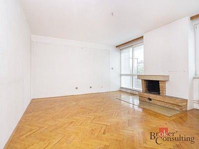
Price reduced
Prodej domu/vily, 120 m²
Prodej domu/vily, 120 m²
7,990,000 CZK → 6,950,000 CZK -13.02%
Original advert ↗Daily market update · 2026-11-18 · Ostrava + 15 km
Data limitation: Prices are advertised, not completed transaction prices. Disappeared adverts are NOT proof of sold or rented status. Search radius may be unverified for individual locations. "New" means first observed since a comparable complete Sreality scan, not independently verified as newly published. "New to tracker" may reflect expanded or partial portal coverage. Older Sreality IDs and known cross-lists are excluded. Additional monthly rental charges are not reliably supplied in these search cards.

Prodej domu/vily, 120 m²
7,990,000 CZK → 6,950,000 CZK -13.02%
Original advert ↗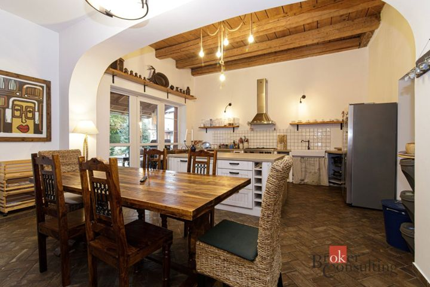
Prodej domu/vily, 400 m²
11,390,000 CZK → 10,970,000 CZK -3.69%
Original advert ↗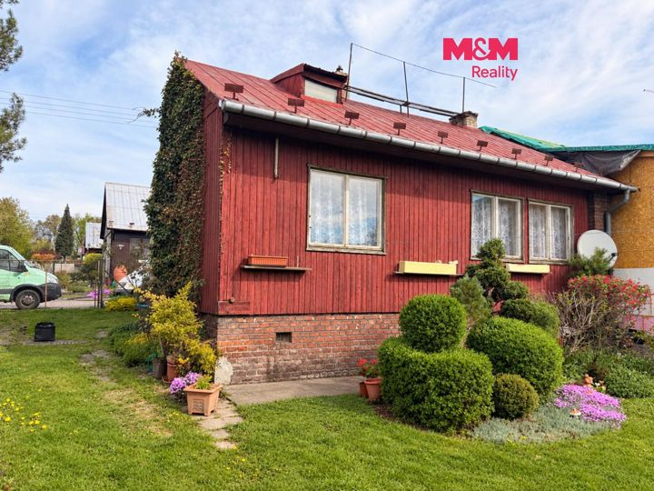
Prodej domu/vily, 58 m²
Not stated → 3,199,999 CZK
Original advert ↗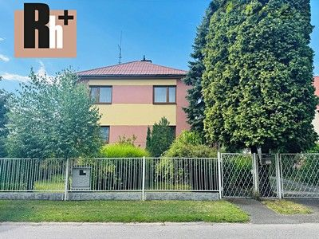
Poruba, Karviná
4,500,000 CZK → Not stated
Original advert ↗
Dobrá, Frýdek-Místek
8,590,000 CZK → Not stated
Original advert ↗
Rychvald, Karviná
5,900,000 CZK → 5,900,000 CZK
Original advert ↗
Řepiště, Frýdek-Místek
9,500,000 CZK → 9,500,000 CZK
Original advert ↗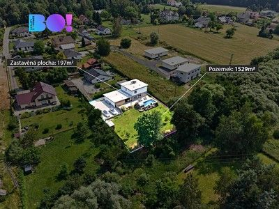
Prostřední Suchá, Karviná
13,900,000 CZK → Not stated
Original advert ↗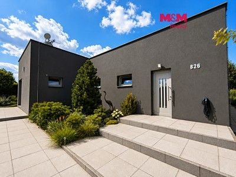
Prostřední Bludovice, Karviná
12,500,000 CZK → 12,500,000 CZK
Original advert ↗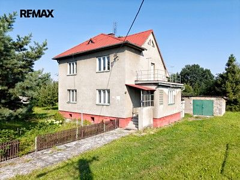
Hrabová, Ostrava-město
4,950,000 CZK → 4,950,000 CZK
Original advert ↗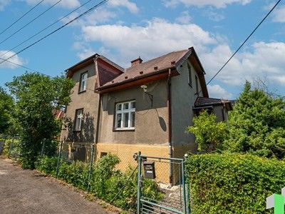
Petřkovice, Ostrava-město
6,290,000 CZK → 6,290,000 CZK
Original advert ↗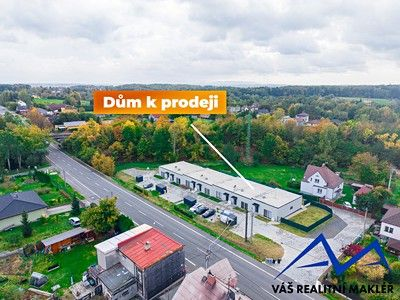
Petřvald, Karviná
7,999,000 CZK → 7,999,000 CZK
Original advert ↗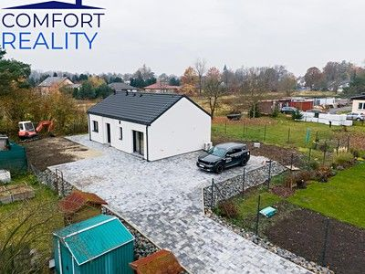
Svinov, Ostrava-město
9,600,000 CZK → 9,600,000 CZK
Original advert ↗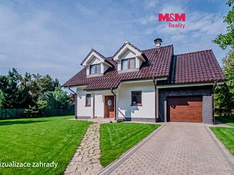
Rychvald, Karviná
9,990,000 CZK → 9,990,000 CZK
Original advert ↗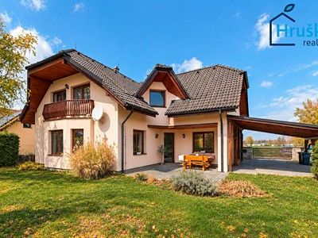
Baška, Frýdek-Místek
10,590,000 CZK → Not stated
Original advert ↗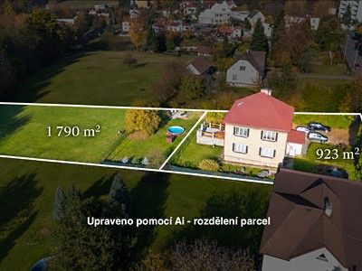
Lutyně, Karviná
Not stated → 11,490,000 CZK
Original advert ↗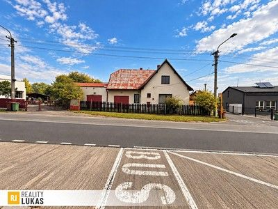
Polanka nad Odrou, Ostrava-město
4,100,000 CZK → 4,100,000 CZK
Original advert ↗
Dolní Lutyně, Karviná
3,800,000 CZK → 3,800,000 CZK
Original advert ↗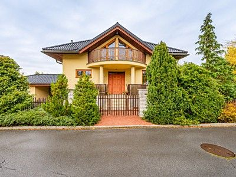
Třebovice, Ostrava-město
Not stated → 14,500,000 CZK
Original advert ↗
Bludovice, Karviná
3,900,000 CZK → 3,900,000 CZK
Original advert ↗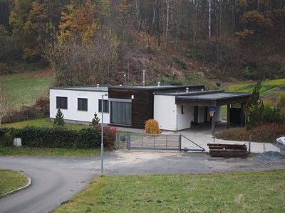
Petřkovice, Ostrava-město
14,900,000 CZK → 14,900,000 CZK
Original advert ↗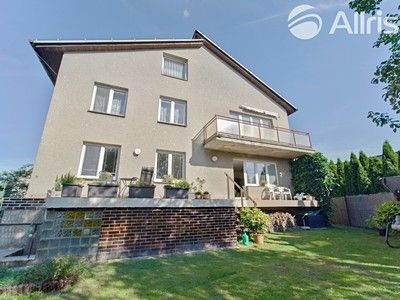
Prostřední Suchá, Karviná
7,990,000 CZK → 7,990,000 CZK
Original advert ↗
Skřečoň, Karviná
7,900,000 CZK → 7,900,000 CZK
Original advert ↗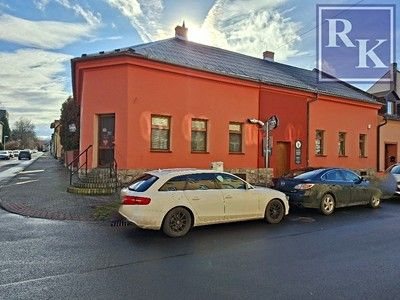
Místek, Frýdek-Místek
12,350,000 CZK → 12,350,000 CZK
Original advert ↗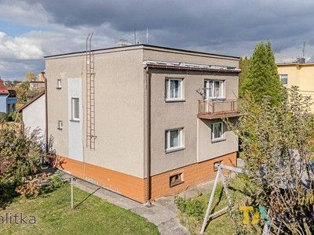
Lutyně, Karviná
4,999,000 CZK → 4,999,000 CZK
Original advert ↗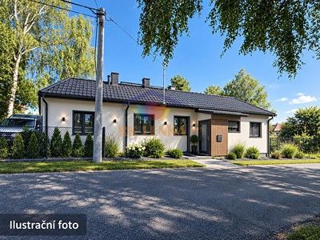
Rychvald, Karviná
2,100,000 CZK → 1,800,000 CZK -14.29%
Original advert ↗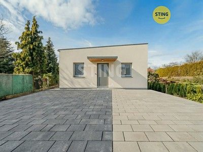
Borová, Opava
6,800,000 CZK → 6,800,000 CZK
Original advert ↗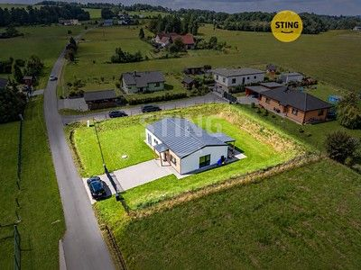
Dolní Domaslavice, Frýdek-Místek
8,490,000 CZK → 8,490,000 CZK
Original advert ↗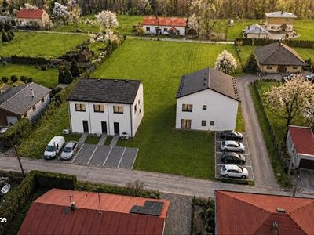
Skřečoň, Karviná
4,990,000 CZK → 4,990,000 CZK
Original advert ↗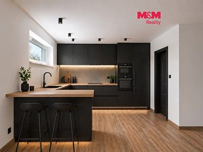
Horní Datyně, Ostrava-město
10,490,000 CZK → 10,490,000 CZK
Original advert ↗
Frýdek, Frýdek-Místek
14,500,000 CZK → 14,500,000 CZK
Original advert ↗
Nová Bělá, Ostrava-město
12,400,000 CZK → 12,400,000 CZK
Original advert ↗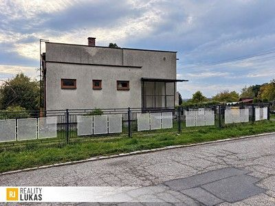
Poruba, Karviná
4,150,000 CZK → 4,150,000 CZK
Original advert ↗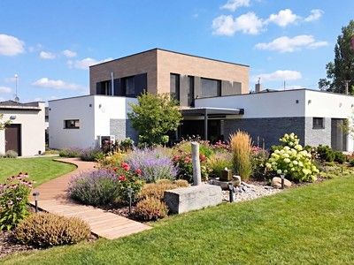
Nová Bělá, Ostrava-město
19,990,000 CZK → 19,990,000 CZK
Original advert ↗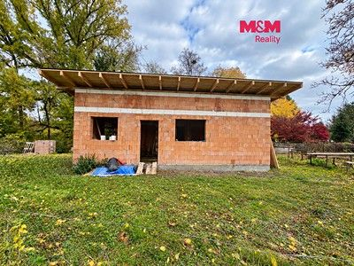
Bohumín, Karviná
3,490,000 CZK → 3,490,000 CZK
Original advert ↗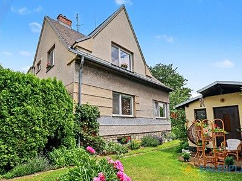
Studénka, Nový Jičín
8,200,000 CZK → 8,200,000 CZK
Original advert ↗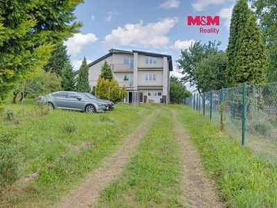
Klimkovice, Ostrava-město
17,990,000 CZK → 17,990,000 CZK
Original advert ↗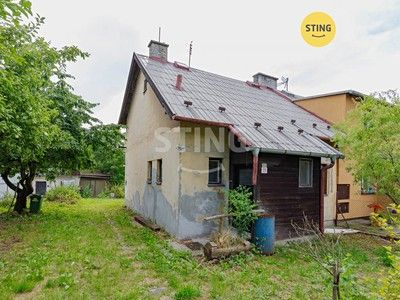
Nová Horka, Nový Jičín
2,790,000 CZK → 2,790,000 CZK
Original advert ↗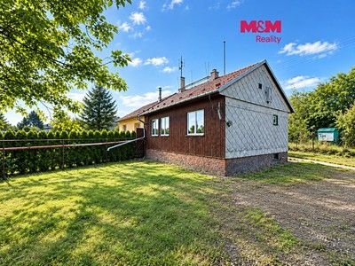
Heřmanice, Ostrava-město
2,770,000 CZK → 2,770,000 CZK
Original advert ↗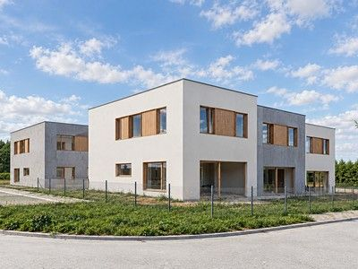
Svinov, Ostrava-město
10,990,000 CZK → 10,990,000 CZK
Original advert ↗
Skřečoň, Karviná
7,900,000 CZK → 7,900,000 CZK
Original advert ↗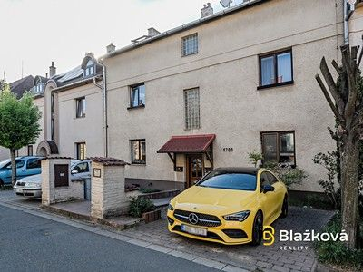
Frýdek, Frýdek-Místek
7,750,000 CZK → 7,750,000 CZK
Original advert ↗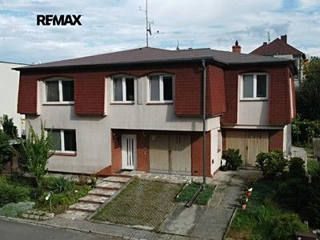
Kobeřice, Opava
6,390,000 CZK → 6,390,000 CZK
Original advert ↗
Trnávka, Nový Jičín
10,490,000 CZK → 10,490,000 CZK
Original advert ↗Výškovice, Ostrava-město
7,990,000 CZK → 6,950,000 CZK -13.02%
Original advert ↗Výškovice, Ostrava-město
7,990,000 CZK → 6,950,000 CZK
Original advert ↗
Šenov, Ostrava-město
5,500,000 CZK → 5,500,000 CZK
Original advert ↗
Hlučín, Opava
6,399,000 CZK → 6,399,000 CZK
Original advert ↗
Sviadnov, Frýdek-Místek
6,900,000 CZK → 6,900,000 CZK
Original advert ↗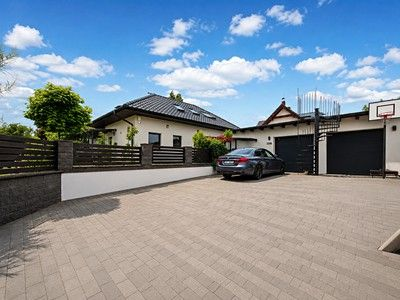
Místek, Frýdek-Místek
12,790,000 CZK → 12,790,000 CZK
Original advert ↗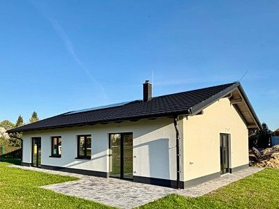
Místek, Frýdek-Místek
11,800,000 CZK → 11,800,000 CZK
Original advert ↗
Ostrava, Ostrava-město
8,995,000 CZK → 8,995,000 CZK
Original advert ↗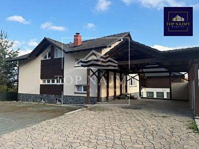
Poruba, Ostrava-město
11,990,000 CZK → 11,990,000 CZK
Original advert ↗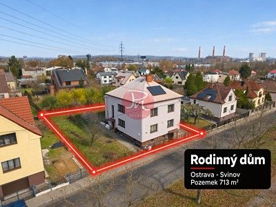
Svinov, Ostrava-město
11,990,000 CZK → 11,990,000 CZK
Original advert ↗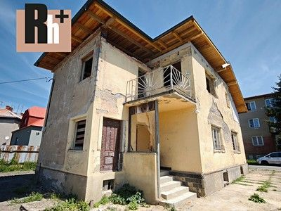
Muglinov, Ostrava-město
4,800,000 CZK → 4,600,000 CZK -4.17%
Original advert ↗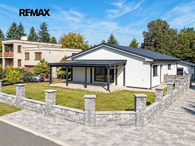
Rychvald, Karviná
8,999,000 CZK → 8,999,000 CZK
Original advert ↗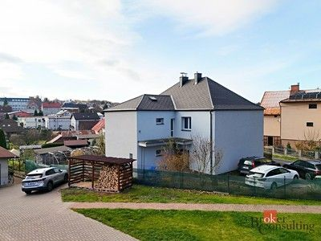
Ludgeřovice, Opava
Not stated → 6,990,000 CZK
Original advert ↗
Horní Těrlicko, Karviná
9,950,000 CZK → 9,950,000 CZK
Original advert ↗
Frýdek, Frýdek-Místek
7,600,000 CZK → 7,600,000 CZK
Original advert ↗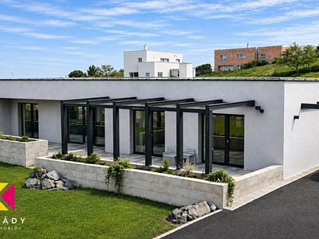
Koblov, Ostrava-město
12,700,000 CZK → 12,700,000 CZK
Original advert ↗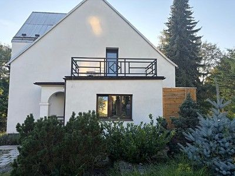
Podlesí, Karviná
7,700,000 CZK → 7,700,000 CZK
Original advert ↗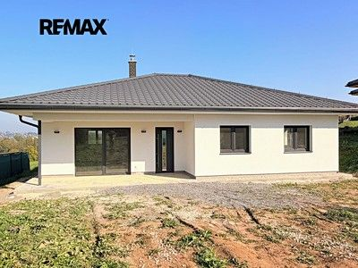
Horní Domaslavice, Frýdek-Místek
9,221,000 CZK → 9,221,000 CZK
Original advert ↗
Petřvald, Karviná
7,900,000 CZK → 7,900,000 CZK
Original advert ↗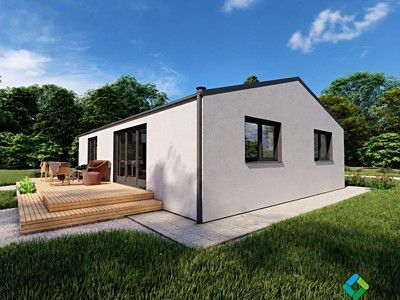
Petřvald, Karviná
6,100,000 CZK → 6,100,000 CZK
Original advert ↗Heřmanice, Ostrava-město
Not stated → 3,199,999 CZK
Original advert ↗
Rychvald, Karviná
4,850,000 CZK → 4,850,000 CZK
Original advert ↗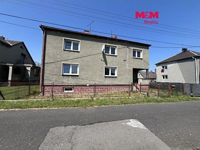
Staré Město, Karviná
2,750,000 CZK → 2,750,000 CZK
Original advert ↗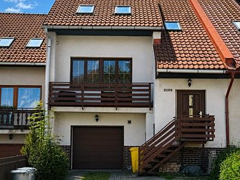
Místek, Frýdek-Místek
7,290,000 CZK → 7,290,000 CZK
Original advert ↗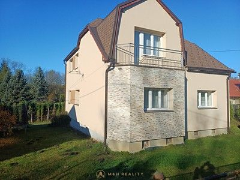
Pržno, Frýdek-Místek
6,900,000 CZK → 6,900,000 CZK
Original advert ↗
Prostřední Suchá, Karviná
7,200,000 CZK → 7,200,000 CZK
Original advert ↗
Vratimov, Ostrava-město
12,700,000 CZK → 12,700,000 CZK
Original advert ↗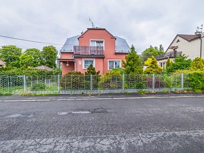
Mizerov, Karviná
6,900,000 CZK → 6,900,000 CZK
Original advert ↗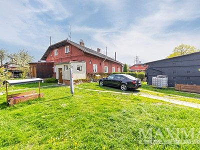
Vítkovice, Ostrava-město
4,981,500 CZK → 4,981,500 CZK
Original advert ↗Dolní Těrlicko, Karviná
6,490,000 CZK → 6,490,000 CZK
Original advert ↗Pustkovec, Ostrava-město
8,595,000 CZK → 8,595,000 CZK
Original advert ↗
Dolní Lutyně, Karviná
7,499,000 CZK → 7,499,000 CZK
Original advert ↗
Koblov, Ostrava-město
12,289,750 CZK → 12,289,750 CZK
Original advert ↗
Dobrá, Frýdek-Místek
4,300,000 CZK → 4,300,000 CZK
Original advert ↗
Skřečoň, Karviná
6,450,000 CZK → Not stated
Original advert ↗Dolní Domaslavice, Frýdek-Místek
4,750,000 CZK → 4,750,000 CZK
Original advert ↗
Fryštát, Karviná
7,990,000 CZK → 7,990,000 CZK
Original advert ↗Hrabová, Ostrava-město
8,790,000 CZK → Not stated
Original advert ↗
Bítov, Nový Jičín
6,250,000 CZK → 6,250,000 CZK
Original advert ↗Ludgeřovice, Opava
4,290,000 CZK → 4,290,000 CZK
Original advert ↗Petřvald, Nový Jičín
5,190,000 CZK → Not stated
Original advert ↗Stará Bělá, Ostrava-město
9,800,000 CZK → 9,800,000 CZK
Original advert ↗
Horní Suchá, Karviná
10,590,000 CZK → Not stated
Original advert ↗Šumbark, Karviná
6,200,000 CZK → 5,999,000 CZK -3.24%
Original advert ↗
Petrovice u Karviné, Karviná
4,900,000 CZK → 4,900,000 CZK
Original advert ↗Kunčičky, Ostrava-město
11,390,000 CZK → 10,970,000 CZK -3.69%
Original advert ↗
Borová, Opava
12,990,000 CZK → 12,990,000 CZK
Original advert ↗Horní Těrlicko, Karviná
7,900,000 CZK → 7,900,000 CZK
Original advert ↗Doubrava, Karviná
9,200,000 CZK → 9,200,000 CZK
Original advert ↗Hlučín, Opava
12,990,000 CZK → 12,990,000 CZK
Original advert ↗Dolní Lhota, Ostrava-město
5,875,000 CZK → 5,875,000 CZK
Original advert ↗Dobrá, Frýdek-Místek
5,390,000 CZK → 5,390,000 CZK
Original advert ↗Ostrava, Ostrava-město
10,990,000 CZK → Not stated
Original advert ↗
Záblatí, Karviná
6,290,000 CZK → 6,290,000 CZK
Original advert ↗Darkovičky, Opava
5,500,000 CZK → 5,500,000 CZK
Original advert ↗Staré Město, Karviná
5,800,000 CZK → 5,800,000 CZK
Original advert ↗Studénka, Nový Jičín
2,990,000 CZK → 2,990,000 CZK
Original advert ↗Doubrava, Karviná
2,500,000 CZK → 2,500,000 CZK
Original advert ↗